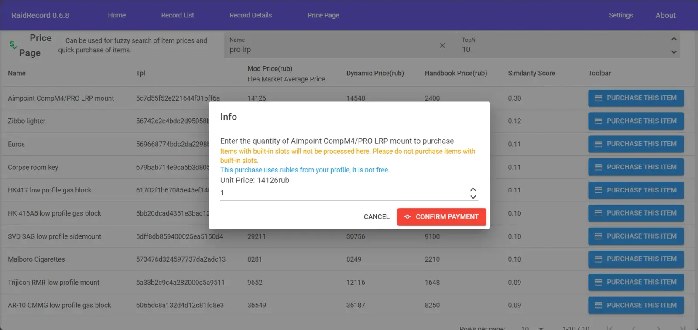
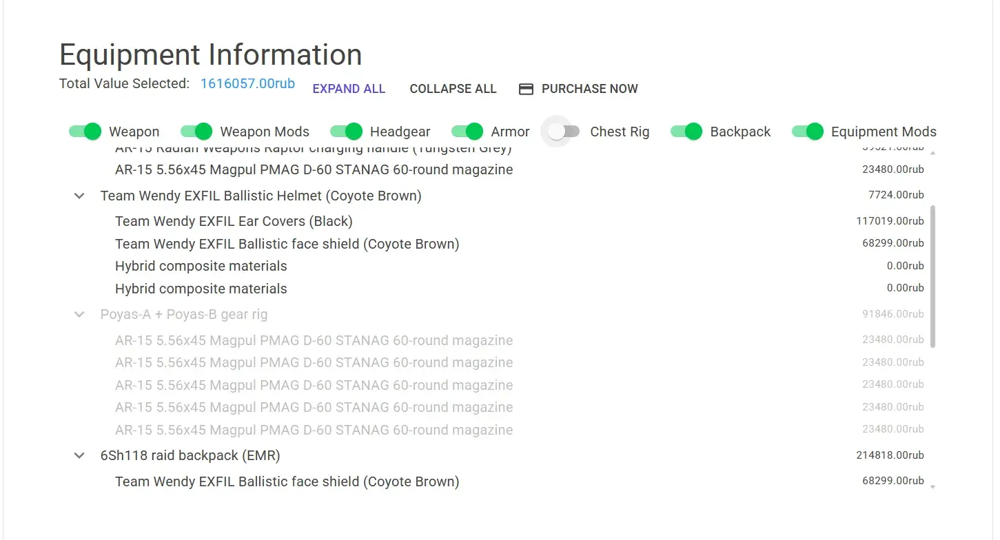
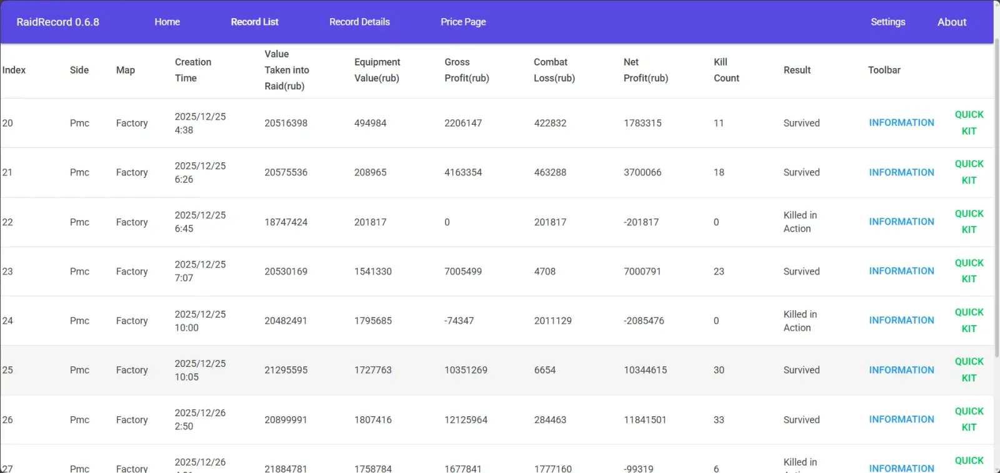
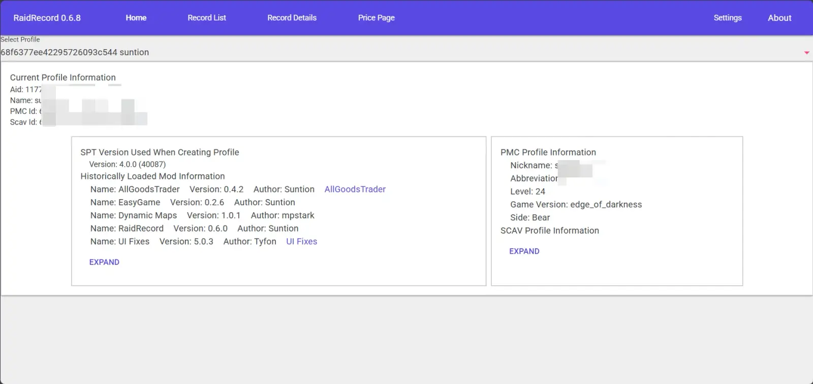
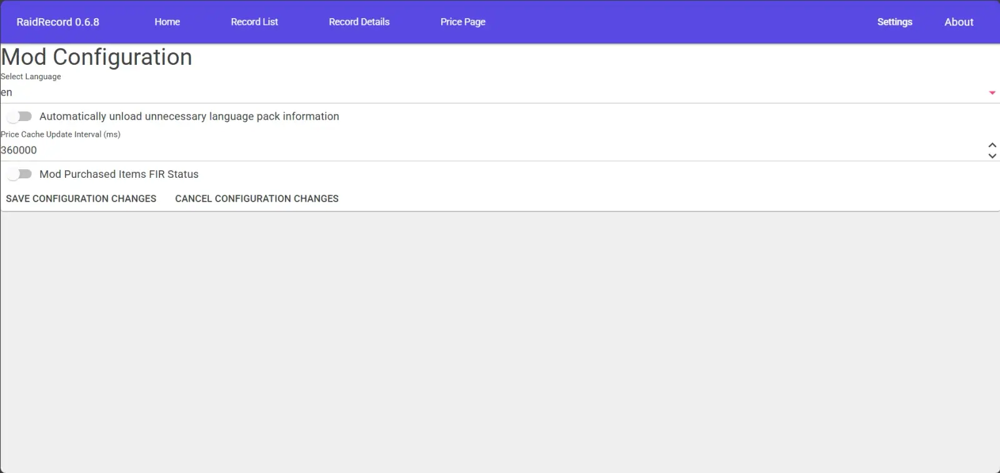
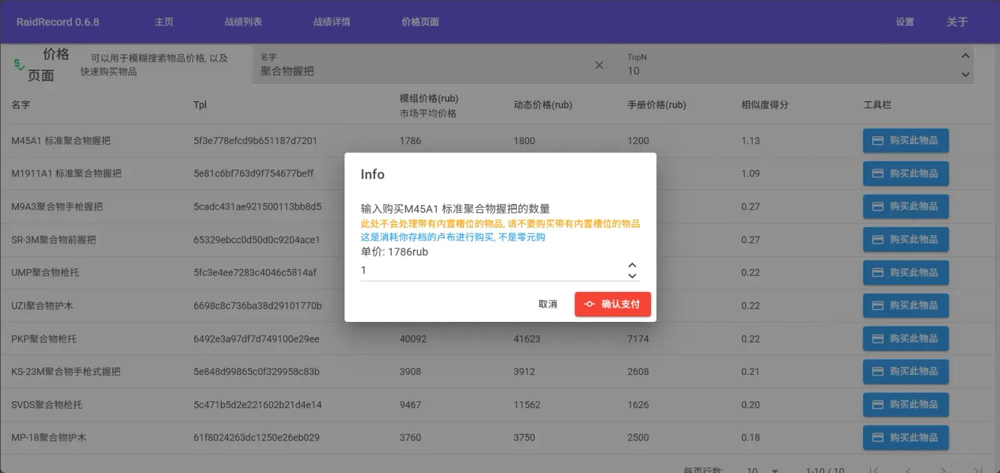
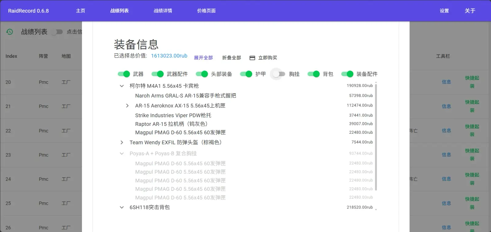
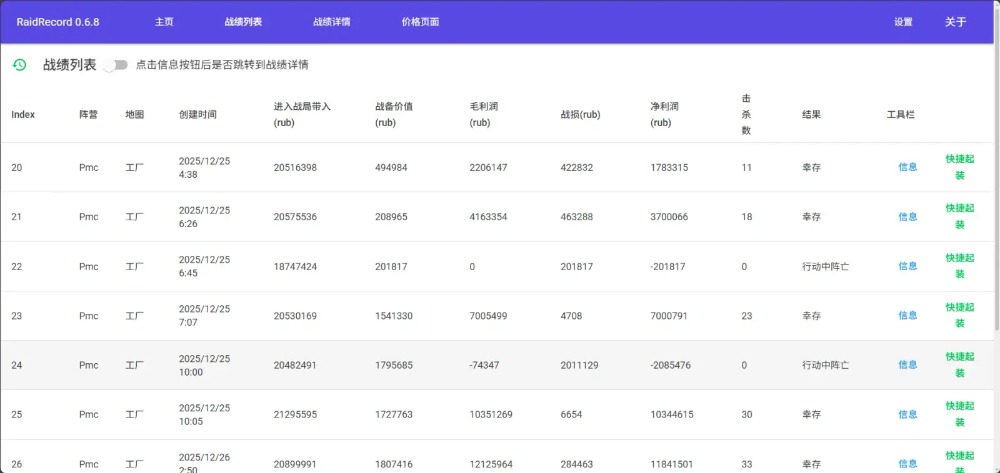
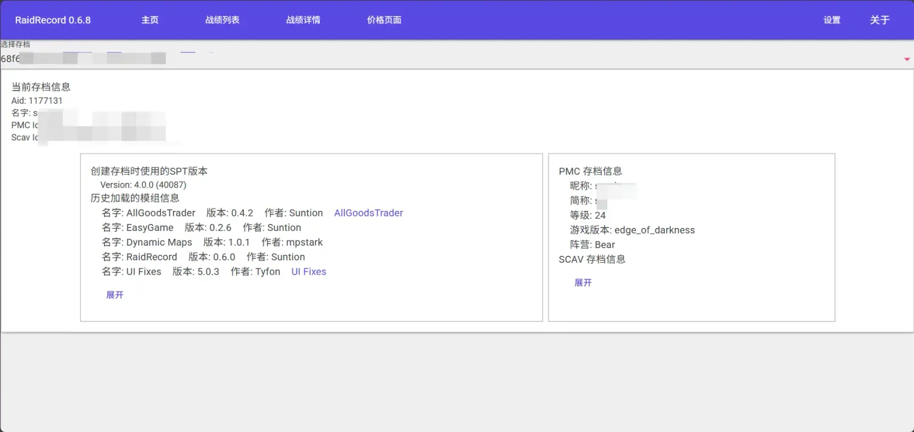
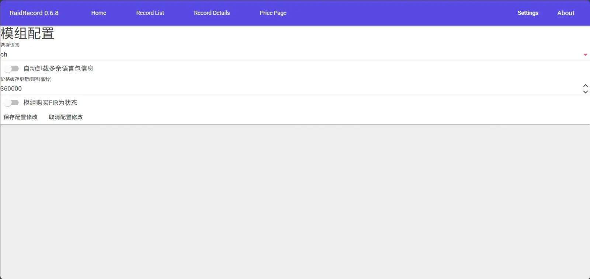

Raid Record
- Downloads
- 2,641
- Favourites
- 2
Mod Overview
The base game only saves limited statistics (Overview page), while this mod accurately records complete combat logs for every match, including:
Kills View in match details page
- Specific weapon used
- Hit location (head, chest, limbs, etc.)
- Type of target killed (PMC, Scav, Boss, Scav Boss, Boss guard, etc.)
- Time the target was killed
Loot View in match details page
- List of items brought into the match and items taken out
- Items newly found in the match, items lost, and changed items (increased bullet count, decreased durability of medical supplies and weapons, etc.)
Match Earnings View in match details page / View in record list page
-
Match map information, match playtime
-
At the start of the match:
- Combat Readiness Value (similar to Delta Action, calculates the combined value of weapons, rigs, backpacks, armor, etc.)
- Secure Container value (total value of all items in the Secure Container, often accounting for a large portion)
- Total value brought in (equals Combat Readiness Value + Secure Container value + value of items in backpack, rig, pockets, and special slots)
-
When leaving the match:
- Total value extracted (gross profit)
- Losses (consumed items, discarded items, durability loss, etc.)
- Net profit (gross profit - losses)
-
Match result:
// Theoretically includes these: public enum ExitStatus { SURVIVED, KILLED, LEFT, // Left the match (via the in-game Esc menu option) RUNNER, MISSINGINACTION, TRANSIT, } -
If survived/transited/rushed extraction: Extraction point information, playstyle information
-
Otherwise: Information about which faction and which enemy (name not important except for bosses) eliminated you using what weapon and which limb was hit.
Prices View in the Prices page
This feature leans towards debugging, primarily used to verify if the mod’s calculated prices are correct. It can also be used for fuzzy searching of item names and IDs related to keywords, and for purchasing FIR items for quests.

Quick Loadout View in match details page / View in record list page
Quickly purchase the equipment used when entering a specific match. You can filter for specific required equipment categories.

Exception Handling
- The mod records data on the server side. If the server crashes for reasons unrelated to this mod before the match ends, as long as it doesn’t crash immediately after the client finishes the match, restarting the server still has a high probability (>90%) of correctly recording the match data.
- If you Alt+F4 after a match starts or the client crashes, launching the next game will cause the cached result of that match to be recorded as an unknown outcome.
Record List Page

WebUI Homepage

Accessing the WebUI
· Method 1 (Quick Jump): In the console, find the line [RaidRecord] WeiUI run at https://127.0.0.1:6969/RaidRecord, hold down the Ctrl key and left-click the link. The browser will automatically open the corresponding page. · Method 2 (Manual Entry): Open any browser, manually enter the address displayed in the console (e.g., https://127.0.0.1:6969/RaidRecord) into the address bar, and press Enter to access it.
Installation Method
The installation is simple. Just extract the .7z file to your SPT game root directory. After installation, your file structure should look like this:
Your SPT Game Root Directory\SPT\user\mods\RaidRecord\(any mod files)
Credits
- Thanks to the SPT team for providing the framework and documentation.
- Thanks to DrakiaXYZ, HiddenCirno, jbs4bmx, GhostFenix̵̮̀x̴̹̃©, Dsnyder | WTT, and all other developers in the community for sharing their experience, code, and patiently answering questions.
- Thank you for downloading and trying out this mod.
Settings
-
Recommended method: Change directly in the WebUI.

-
Go to …/SPT/user/mods/RaidRecord/db and open “config.json”.
-
Set
localto the two-letter name of a translation file that exists in the db/locals folder, e.g., “cn”.If changing the language has no effect, clear the local cache in the Launcher and restart the client.
-
Set
logPathto change the output directory for some logs within the mod (to prevent mod error messages from cluttering the SPT server logs). -
Set
autoUnloadOtherLanguagesto enable the optimization feature for multi-language support starting from0.6.4. -
Set
priceCacheUpdateMinTimeto change the update interval for the mod’s price cache. This setting does not affect thepricecommand, which will always get the price calculated by the mod immediately. -
Set
modGiveIsFIRto modify whether items given by the mod (when purchasing items via the mod, quick loadout) are FIR (Found in Raid) status.
Database Description
…/SPT/user/mods/RaidRecord/db folder
~0.6.1 The locals folder contains translation files. The records folder (created after running the mod) contains record files for different accounts. config.json saves the mod configuration.
For installation and database compatibility, refer to the details in the Version section of this mod.
Command System
All commands and parameters are case-insensitive, but it is recommended to use lowercase letters. Command usage:
commandkey parameter1 parameter1value parameter2 parameter2value suffixparameterString-type parameter values can be enclosed in half-width English double quotes to include spaces.
After entering a match, find a friend named Raid Record Manager and send help to get command help information.
The current version supports the following commands:
- help: Get help information for all commands.
- cls: Clear the chat history in the dialog (recommended to use frequently).
- info: Get earnings, kills, and other information for a specified match.
- items: Get the loot changes or brought-in/taken-out list for a specified match. Can be limited to output items whose price change falls within the [ge, le] range.
- list: List all existing match records. Later pages contain newer matches. You can adjust the number of items per page using the
limitparameter. - price: Get the value of a specified item, or perform a fuzzy search for multiple item values by name.
- buy: Quickly purchase the equipment used when entering a specified match (in-game, entering
buycan quickly purchase the equipment from the last match).
Localization Method
AI-Assisted Translation
- Make a copy of
ch.jsonoren.json, rename it to the two-letter name of the target language, e.g., “cz.json” (best to correspond with the name of Game Folder\SPT\SPT_Data\database\locales\global**.json). - Send the translation file to the AI and ask it to translate while preserving the format.
- If the AI modifies any translation keys, interrupt it and instruct the AI to only translate the JSON values.
- If the AI modifies anything inside
{{}}, interrupt it and instruct the AI not to translate{{}}or the values inside them.
- Verify that the translation results are correct. The above steps should translate over 70% of the content.
- Check whether the column variables in the tables under the
"translations"key correspond with their names to prevent the AI from altering word order (changing column and table names together is acceptable). - Check for missing
\n.
Manual Translation
- Find translations in
Game Folder\SPT\SPT_Data\database\locales\global\**.json.- “roleNames”: Search for
BotRoleandScavRole. - “armorZone”: Search for
DeathInfo,Collider Type(recommended),Armor Zone,HeadSegment.
- “roleNames”: Search for
- If you urgently need to use commands, prioritize translating values under “translations”.
- If you urgently need to view logs output by the server, prioritize translating values under “serverMessage”.
模组概述
原版游戏仅保存有限统计数据(总览页面), 而本模组精准记录每一场对局的完整战斗日志, 包括:
击杀
对局详情页面查看
- 使用的具体武器
- 命中部位(头部、胸部、四肢等)
- 击杀目标类型(PMC、Scav、Boss、Scav Boss、Boss 带的守卫等)
- 击杀目标的时间
物资
对局详情页面查看
- 带入对局的物品与带出对局的物品清单
- 这场对局中新搜到的物资, 损失的物资, 变化的物资(子弹数量增加, 药品与武器耐久减少等)
对局收益
对局详情页面查看 / 战绩列表页面查看
-
对局地图信息, 对局游玩时间
-
对局入场时的
- 战备价值(类似三角洲行动, 计算武器, 弹挂, 背包, 护甲等装备的价值和)
- 安全箱内价值(安全箱内所有物资总价值, 有不少情况下, 这里的价值占非常大的比率)(Scav模式为0)
- 总的带入价值(该值等于战备价值+安全箱内价值+背包弹挂口袋特殊插槽内的物品价值)
-
离开对局时
- 带出总价值(算是毛利润)
- 战损(使用物品消耗, 丢弃物品, 耐久损耗等)
- 净利润(毛利润-战损)
-
对局结果
// 理论上有这些: public enum ExitStatus { SURVIVED, // 幸存 KILLED, // 被击杀 LEFT, // 离开对局(指客户端Esc后那个选项) RUNNER, // 匆匆撤离 MISSINGINACTION, // 迷失 TRANSIT, // 转移 } -
如果幸存/转移/匆匆撤离 : 撤离点信息, 游戏风格信息
-
其他情况: 被哪个阵营的哪个敌人(除了boss, 名称不重要)使用什么武器命中你哪个肢体淘汰你的信息
价格
在价格页面查看
该功能偏向调试, 主要用于验证模组计算的价格是否正确, 也可以用于模糊搜索与关键词相关的物品名称与ID, 以及购买FIR物品过任务

快捷起装
对局详情页面查看 / 战绩列表页面查看
可以快速购买指定对局进入对局时的装备 可以筛选指定需要的装备类别

意外情况处理
- 模组会在服务端记录数据, 如果对局结束前服务端在非本模组原因下崩溃, 只要不是客户端刚对局结束时服务端就崩溃, 重启服务端仍然有概率(>90%)正确记录对局数据
- 对局启动后Alt+F4或者客户端崩溃, 下一次启动战局后会导致记录的该战局的缓存对局结果被记录为未知结局
对局列表页面

WebUI主页

访问 WebUI
· 方法一（快捷跳转）： 在控制台找到 [RaidRecord] WeiUI run at https://127.0.0.1:6969/RaidRecord 这一行，按住 Ctrl 键并用鼠标左键点击该链接，浏览器会自动打开对应页面。 · 方法二（手动输入）： 打开任意浏览器，在地址栏手动输入控制台中显示的地址（如 https://127.0.0.1:6969/RaidRecord），然后按回车键访问。
安装方式
安装方法很简单, 只需将 .7z 文件解压到您的SPT游戏根目录即可 安装完成后，您的文件结构应如下所示：
你的SPT游戏根目录\SPT\user\mods\RaidRecord\(模组的任何文件)
致谢
- 感谢SPT团队提供的框架与文档。
- 感谢DrakiaXYZ, HiddenCirno, jbs4bmx, GhostFenix̵̮̀x̴̹̃©, Dsnyder | WTT以及其他所有在社区中分享经验、代码与耐心解答问题的开发者们。
- 感谢您下载并尝试本模组。
设置
-
推荐方案, 直接在WebUI更改

-
前往…/SPT/user/mods/RaidRecord/db 并打开“config.json”
-
设置
local为db/locals文件夹下存在的翻译文件的二位名称, 例如“cn“更改任何语言后如果无效, 应该在Launcher清理本地缓存后再启动客户端
-
设置
logPath以更改模组内一些日志的输出目录(这是为了避免模组报错信息导致SPT服务端日志过于繁琐的问题) -
设置
autoUnloadOtherLanguages, 以启用0.6.4开始的对多语言化的优化功能 -
设置
priceCacheUpdateMinTime, 以更改模组价格缓存的更新间隔, 该设置不会影响price命令,price只会立刻获取当前模组计算的价格 -
设置
modGiveIsFIR, 以修改模组给的物资(在模组购买物品, 快速起装)是否是FIR(对局中发现(带勾))状态
数据库说明
…/SPT/user/mods/RaidRecord/db 文件夹
~0.6.1 locals文件夹下为翻译文件 records文件夹(运行过模组后才会创建)为不同账户的记录文件 config.json保存模组配置
安装与数据库的兼容性参考本模组的Version中的详细信息
命令系统
所有命令和参数对大小写不敏感, 但推荐全部使用小写字母 指令使用方式为
命令键 参数1 参数1的值 参数2 参数2的值 尾缀参数字符串类型参数的值可以用半角英文双引号包起来以输入空格
进入对局后, 找到一个名为对局战绩管理的好友, 对他发送help以获取指令的帮助信息
当前版本支持以下指令:
- help: 获取所有命令帮助信息
- cls: 清理对话框聊天记录(推荐多用用)
- info: 获取指定对局收益, 击杀等信息
- items: 获取指定对局物资变化或带入带出清单, 可以限定只输出价格变化量处于[ge, le]之间的物品清单
- list: 列出当前已有的所有对局记录, 页数越靠后, 对局越新; 可以通过
limit参数调整每页显示数量 - price: 获取指定物品价值, 或者通过名称模糊搜索多个物品价值
- buy: 快速购买指定对局进入对局时的装备(局内可以输入一个buy快速购买上局装备)
本地化方式
AI辅助翻译
- 复制一份
ch.json或en.json, 重命名为对应语言的二位名称, 例如“cz.json“(最好与Game Folder\SPT\SPT_Data\database\locales\global**.json)的名称对应 - 将翻译文件发送给AI, 要求它保留格式的翻译;
- 如果AI进行了任何翻译键的操作, 打断他, 并在提示词中要求AI只翻译json的值
- 如果AI修改了任何{{}}中的内容, 打断他, 并在提示词中要求AI禁止翻译
{{}}与其中的值
- 验证翻译结果是否正确, 上述操作基本能进行70%以上的翻译
- 检查翻译文件
"translations"键下的各个表的列的变量是否与名称对应, 以防止AI改变语序(列名和表名顺序一起改变是可以的) - 检查是否漏了
\n
手动翻译
- 可以在
Game Folder\SPT\SPT_Data\database\locales\global\**.json通过找到的翻译- “roleNames”: 搜索
BotRole和ScavRole - “armorZone”: 搜索
DeathInfo,Collider Type(推荐),Armor Zone,HeadSegment
- “roleNames”: 搜索
- 急需使用命令, 优先翻译“translations“下的值
- 急需查看服务端输出的日志, 优先翻译“serverMessage“下的值
Version
0.7.2
Test Framework & Security Improvements
- Added unit test framework and CI environment, switching CI Runner from Ubuntu to Windows for better cross-platform compatibility
- Strengthened file path access control: new path validation prevents unauthorized directory access
- Updated dependency management: replaced local SuntionCore DLLs with NuGet packages (versions 1.2.0 and 1.0.0)
测试架构与安全增强
- 新增单元测试框架与 CI 环境，并将 CI Runner 从 Ubuntu 切换至 Windows 以提升跨平台兼容性
- 强化文件路径访问控制：新增路径校验逻辑，阻止非授权目录访问
- 更新依赖管理：将本地 SuntionCore DLL 替换为 NuGet 包（版本 1.2.0 和 1.0.0）
Dependencies
Version
0.7.1
New Features
- Price Calculation Mode Configuration: Introduced configurable base price calculation strategy with three modes
Handbook: Use handbook pricesAvgRagfair: Use average flea market pricesAuto: Automatically select optimal price source
- Web UI Configuration: Added dropdown selection component for price calculation mode, supporting graphical configuration of all three modes
- Multi-language Support: Added Chinese, English, and Korean interface text for price mode configuration
Refactoring & Optimization
- Simplified Price System: Rewrote price retrieval logic, removed redundant dependency injections (PaymentHelper, HandbookHelper, DatabaseService, RagfairOfferService), replaced with unified RagfairController
- Legacy Code Cleanup: Removed complex flea market offer traversal logic and private method GetAveragePriceFromOffers
Changes
- Default Configuration Adjustment: Changed default price calculation mode value to AvgRagfair
新增功能
- 价格计算模式配置：引入可配置的基础价格计算策略，支持三种模式
Handbook：使用手册价格AvgRagfair：使用跳蚤市场平均价格Auto：自动选择最优价格来源
- Web界面配置：新增价格计算方式下拉选择组件，支持三种模式的图形化配置
- 多语言支持：为价格模式配置添加中、英、韩文界面文本
重构优化
- 简化价格系统：重写价格获取逻辑，移除冗余的依赖注入（PaymentHelper、HandbookHelper、DatabaseService、RagfairOfferService），替换为统一的RagfairController
- 清理遗留代码：删除复杂的跳蚤报价遍历逻辑及私有方法GetAveragePriceFromOffers
变更
- 默认配置调整：价格计算模式默认值为AvgRagfair
Dependencies
Version
0.7.0
New Features
- Favorite Records System
- Support for adding important raid records to favorites to prevent accidental deletion
- Visual indicator for favorite status (green marker)
- Added “Show only favorites” filter toggle for quick access to important records
- Favorite status automatically persists across sessions
Optimizations and Improvements
-
Data Model Optimization
- Added
MapIdproperty toRaidArchivewith lazy loading strategy for improved performance - Removed outdated state transition logic to simplify data structure
- Optimized compatibility handling for legacy data
- Added
-
Value Calculation Rules Adjustment
- Removed value-zeroing restriction for Scabbard, allowing normal valuation to address the “zero-cost knife” issue
- Explicitly exclude knives (
BaseClasses.KNIFE) and secure container items from equipment value calculation
Removals
- Removed unused
Stateproperty fromRaidInfoandRaidArchive - Deleted
EFTCombatRecord.ArchivedRecordscalculation property and related state transition logic
新增功能
- 战绩收藏系统
- 支持将重要战绩添加至收藏夹，防止误删
- 新增收藏状态视觉标识（绿色标记）
- 增加“只显示收藏“筛选开关，便于快速定位重要记录
- 收藏状态自动持久化存储
优化与改进
-
数据模型优化
RaidArchive新增MapId属性，采用惰性填充策略提升性能- 移除过时的状态流转逻辑，简化数据结构
- 优化旧数据兼容性处理
-
价值计算规则调整
- 移除对
Scabbard（刀鞘）的价值归零限制，允许正常计价，解决“零元购“刀具的问题 - 从战备价值中显式排除刀具 (
BaseClasses.KNIFE) 与安全箱物品
- 移除对
移除项
- 移除
RaidInfo和RaidArchive中未使用的State属性 - 删除
EFTCombatRecord.ArchivedRecords计算属性及相关状态流转逻辑
Dependencies
Version
0.6.13
New Features
- Added tooltip hints for the “Fix Archive” button in the settings page, explaining when and how to use this feature properly
- Added multi-language support for the Statistics Page navigation link (now supports Chinese, English, and Korean)
Improvements
- Enhanced logging system to better track account initialization, record deletions, and item purchases
- Improved error handling in charts and purchase pages to prevent crashes when data is missing
- Unified item distribution logic across WebUI and chat commands - items you purchase or receive will now consistently follow your “Found in Raid” (FIR) settings
- Optimized background code for better performance and maintainability
Bug Fixes
- Fixed an issue where FIR status configuration wasn’t being properly applied after the Suntion extension refactor
- Fixed an issue where logs might not be recorded due to missing data at the start/end of a raid
Note for Users The “Fix Archive” feature in settings is designed specifically for players upgrading from version 0.6.8 or earlier. Using it too frequently may affect your statistics accuracy. Please use it only when needed.
新增功能
- 设置页面的“修复存档”按钮增加了提示信息，详细说明该功能的适用场景（仅建议从 0.6.8 及更早版本升级的用户使用）
- 统计页面的导航链接现已支持多语言显示（中文、英文、韩文）
优化改进
- 增强了后台日志记录，能更好地追踪账号初始化、删除记录、购买物资等操作
- 优化了统计图表和购买页面的错误处理，避免因数据异常导致页面崩溃
- 统一了网页端和聊天命令的物品发放逻辑 - 现在购买或领取的物品将完全遵循您的“是否标记为战局中找到”(FIR)设置
- 对部分后台代码进行了清理和优化，提升运行效率
问题修复
- 修复了使用 Suntion 扩展重构后，物品的“战局中找到”(FIR)状态配置未能正确生效的问题
- 修复了战局开始/结束时可能因数据缺失导致的日志未记录
温馨提示 设置页面中的“修复存档”功能主要是为从 0.6.8 及更早版本升级的玩家准备的数据修正工具。频繁使用可能会导致统计数据不准确，请仅在必要时使用。
Dependencies
Version
0.6.12
Raid Statistics Page: Added a comprehensive statistics dashboard with multiple data visualization components
- Economic Analysis: View entry value, equipment value, gross and net profit trends with interactive dual-line charts
- Extraction Patterns: Track extraction distribution across different maps with visual stacked bar charts
- Faction Performance: Analyze extraction statistics for different factions through intuitive visualizations
- Raid Efficiency: Monitor profit-to-loss ratio and net profit per minute with flexible chart type switching
Improved Interface & Experience:
- Added multilingual support for all statistics features with dynamic language switching
- Enhanced pagination controls with clearer navigation and visual feedback
- Standardized profit-to-loss ratio display to three decimal places for consistent readability
- Migrated currency display to unified format across all interface elements
Technical Refinements:
- Fixed raid duration display to correctly show match time instead of raw timestamp
- Improved error logging with specific identifiers for easier troubleshooting
新增数据统计页面：添加了全面的数据统计仪表板，包含多个数据可视化组件
- 经济趋势分析：通过交互式双线图表查看入场价值、装备价值、毛利润和净利润趋势
- 撤离分布统计：使用堆叠柱状图追踪不同地图上的撤离分布情况
- 阵营表现分析：通过直观的可视化图表分析不同阵营的撤离统计数据
- 对局效率监控：灵活切换图表类型，查看盈亏比和每分钟净利润变化趋势
界面与体验优化：
- 为所有统计功能添加多语言支持，实现动态语言切换
- 优化分页控制，提供更清晰的导航和视觉反馈
- 统一盈亏比显示为三位小数，确保阅读一致性
- 整合全界面货币显示格式，统一展示风格
问题修复：
- 修复 raid 持续时间显示，现在正确显示对战时间而非原始时间戳
- 改进错误日志，使用具体标识符便于问题排查
Dependencies
Version
0.6.11
New
- Korean Language Support: Added Korean localization, primarily contributed by Jungyu Kim
Fixes
- Fixed Timezone Display Issue: Resolved the problem where battle record times and creation times were showing in UTC instead of your local system time
Dependencies
Version
0.6.10
New Features
- When selecting a save file, display the disk space occupied by the save (only includes historical record files from this mod).
- Allow deletion of historical match records directly from the match history list interface.
Known Issues
- After deleting a save file, the tab names of all subsequently opened detailed information views will not update automatically (confirmed behavior when viewing information; no plans to fix).
新增
- 选择存档时, 显示存档占用的磁盘大小(只是本模组的历史记录存档文件)
- 在战绩列表界面允许删除历史战绩
已知问题
- 删除存档后，它后面的所有被打开的详细信息的标签名称不会同步修改(在查看信息时确认 | 没有修复计划)
Version
0.6.9
New Features
- Dark Mode: Now available in the settings page. The WebUI default style has been changed to dark mode to protect your eyes.
- Durability Repair Function: Can now be adjusted in the settings interface. This affects item prices and the durability of purchased gear in the Quick Loadout feature.
- Quick Purchase Gear Control Enhancements:
- Displays item modification information
- Shows icon and text indicating whether the durability repair function is enabled
- Added multi-select list to exclude specific items, allowing you to customize which items appear when combined with type-based exclusion
- This exclusion method does not automatically exclude child items (unlike type-based exclusion, which excludes all child items when a parent type is excluded)
- Can be used to individually purchase built-in armor plates (can be sold through the quick sell mod, but not recommended)
- Excluded items in the multi-select list are synchronized with the item tree above to show exclusion status
- New Repair Panel in Settings Page: Used to fix gross profit and combat loss data calculated in previous versions
- New Compensation Control in Settings Page: Allows one-click recovery of Roubles lost due to mod issues or removal of accidentally acquired Roubles
- New Check for Updates Button in Settings Page: Redirects to the mod’s Release page for easy update checks
Changes
- Match history list now displays in reverse chronological order by default (more recent matches appear on smaller page numbers)
- Buttons under the match history page toolbar have been changed to dropdown menus, unifying the style with other table elements (info button and quick loadout button merged into menu)
Optimizations
- Added more thorough validation checks on the price page
- Quantity now resets after purchasing items on the price page
- Optimized data generation logic when purchasing items on the price page
- Refactored all data structure management in the quick purchase gear control
- Optimized default view of match history list and toolbar layout
- Improved item selection display in quick purchase gear control, allowing excluded items to be collapsed or expanded
Fixes
- Fixed tree node disabling logic
- Fixed text errors in Chinese WebUI settings page
- Fixed missing spaces in price displays in English WebUI quick purchase gear control
- Resolved warning messages in the quick purchase gear control
- Fixed alignment issues with expand/collapse buttons, total value display, and purchase button in the quick purchase gear control
- Fixed incorrect gross profit and combat loss calculation logic
Known Issues
- The “Repair Archive” function in settings is primarily designed as a data correction tool for players upgrading from version 0.6.8 and earlier. Frequent use may lead to inaccurate statistics. Please use only when necessary.
新增功能
- 深色模式：现在可以在设置页面开启，WebUI 默认样式已更改为深色模式，保护您的眼睛
- 耐久度维修功能：现可在设置界面调整，影响快速配装功能中的物品价格和购买装备的耐久度
- 快速配装控件增强：
- 显示物品改装信息
- 显示耐久度维修功能是否开启的图标和文字提示
- 新增多选列表排除特定物品，可与按类型排除结合使用，自由定制所需物品
- 此排除方式不会自动排除子节点（按类型排除会在排除父节点类型时排除所有子节点）
- 可用于单独购买内置装甲板（可通过快速出售模组出售，但不推荐）
- 多选列表中排除的物品会与上方物品树同步显示排除状态
- 设置页面新增修复面板：用于修复旧版本计算错误的总收益和战斗损失数据
- 设置页面新增补偿控制：可一键找回因模组问题损失的卢布，或清除误获取的卢布
- 设置页面新增检查更新按钮：可快速跳转至模组的 Release 页面，方便检查更新
变更调整
- 对战历史列表默认按时间倒序显示（越近的对战所在页码越小）
- 对战历史页面工具栏下的按钮改为下拉菜单，与其他表格元素的样式统一（信息按钮和快速配装按钮合并至菜单中）
优化改进
- 在价格页面添加了更详细的空值检查
- 在价格页面购买物品后，购买数量自动重置
- 优化了在价格页面购买物品时 Upd 数据的生成逻辑
- 重构了快速配装控件中所有数据结构的管理和使用逻辑
- 优化了对战历史列表的默认视图和工具栏布局
- 改进了快速配装控件中物品选择状态的显示，可折叠或展开已排除的物品
问题修复
- 修复了树形控件的节点禁用逻辑
- 修复了中文 WebUI 设置页面的文本错误
- 修复了英文 WebUI 快速配装控件中价格显示缺少空格的问题
- 解决了快速配装控件中的警告信息
- 修复了快速配装控件中展开/折叠按钮、总价值显示和购买按钮的对齐问题
- 修复了总收益和战斗损失计算错误的相关逻辑
已知问题
- 设置页面中的“修复存档”功能主要是为从 0.6.8 及更早版本升级的玩家准备的数据修正工具。频繁使用可能会导致统计数据不准确，请仅在必要时使用
Version
0.6.8
New Features
-
Brand New WebUI: Added a graphical interface for easier mod management
- Homepage: Player profile selection screen for quick access
- Match List: Browse past raid history with detailed information
- Price Page: Search items by name and view prices with the Quick Equipment Purchase tool
- Match Details: View comprehensive raid data including basic info, kills, one-click loadout builder, and item change tracking
- Settings Page: Modify most mod configuration options directly through the interface
-
Enhanced Quick Purchase System: Improved the tree-view tool for quick equipment purchasing
- Added scroll support on both List and Info pages
- Expanded filtering options: Filter items by Weapons, Weapon Attachments, Helmets, Armors, Chest Rigs, Backpacks, and Equipment Attachments
-
Language & Mail Improvements:
- Added support for sending Found in Raid (FIR) items through the mail system
- Improved language switching with faster response times
Changes & Improvements
- Code Restructuring: Reorganized internal systems for better performance and reliability
- Error Messages: Main interface text and key messages are fully translated; WebUI error messages can be translated through your browser
- Item Classification: Refined item categories for more accurate filtering
- Language Switching: Optimized logic for faster and more reliable language changes
Fixes
- Quick Purchase Tree:
- Fixed price calculation errors when certain items were disabled
- Corrected item exclusion logic to properly handle parent-child relationships
- Item Categories: Fixed overly broad classifications that were affecting some item types
- Display Issues:
- Resolved language cache problems that could show wrong text after switching languages
- Fixed incorrect “Survivor” playstyle label
- Improved language selection clarity in settings
新增功能
-
全新WebUI界面：新增图形化界面，更方便管理模组
- 首页：玩家档案选择界面，快速切换档案
- 对战列表：浏览过往对战历史，查看详细信息
- 价格页面：按名称搜索物品、查看价格，使用快速配装工具
- 对战详情：查看完整对战数据，包括基本信息、击杀记录、一键配装和物品变化追踪
- 设置页面：直接通过界面修改大部分模组配置选项
-
快速配装系统升级：改进了快速配装的树形视图工具
- 在列表和详情页面都添加了滚动支持
- 扩展筛选选项：可按武器、武器配件、头盔、护甲、胸挂、背包、装备配件进行筛选
-
邮件与语言功能改进：
- 新增支持通过邮件系统发送战利品（FIR）物品
- 改进语言切换功能，响应更快速
变更与优化
- 代码重构：重组内部系统，提升性能和稳定性
- 错误提示：主界面文字和关键提示已完成翻译；WebUI错误提示可通过浏览器翻译
- 物品分类：优化物品分类，筛选更精准
- 语言切换：优化切换逻辑，更快速可靠
修复
- 快速配装树：
- 修复禁用某些物品时可能出现的价格计算错误
- 修正物品排除逻辑，正确处理父子关系
- 物品分类：修复分类过宽影响部分物品类型的问题
- 显示问题：
- 解决切换语言后可能显示错误文字的缓存问题
- 修正“幸存者“玩法标签错误
- 优化设置中的语言选择显示
Version
0.6.6
New Features
- The
itemscommand now supportsgeandleparameters to limit the displayed range of price changes:gemeans the absolute value of the change is greater than or equal to this value.lemeans the absolute value of the change is less than or equal to this value.- Defaults are
ge=0andle=double.MaxValue; default value is 0.
- Added detailed records of carried equipment and compressed records of secure container items to the raid database.
- New
buycommand for quickly purchasing the loadout used at the start of a specified raid (excluding ammunition). By default, it purchases the loadout from the previous raid:buy: Buys the loadout from the last raid.buy [index: int]: Buys the loadout at the specified index.buy [limit: int] [page: int] list: Displays the specified page of available quick-buy loadouts.buy [limit: int] [page: int] ls: Short form of the above command.Parameter behavior for
buy listmatches the updatedlistcommand.buy [index: int] preview: Previews the loadout and its total price at the specified index.buy [index: int] pv: Short form of the preview command.
Optimizations
- In the
listcommand, non-first pages now display entries using their actual indices in the full list, ensuring consistency with indices used ininfoanditemscommands. - The
listcommand now defaults to showing the latest page of raids (i.e., the last page). The allowed range for thelimitparameter has been expanded from 1–20 to 1–50. - The
listcommand now accepts negative values forpage, where-1refers to the last page,-2to the second-to-last, etc. - Improved support for localizing boss names. Boss display names can now be customized in
"roleNames"withinlocals\**.json, allowing community-friendly names.
Changes
- Extended the
RaidArchivemodel with new propertiesEquipmentItemsandSecuredItemsto explicitly store player equipment and secure container item data. - Reduced the minimum number of results shown for fuzzy
pricesearches from 10 to 1. - Built-in plate carrier slot values previously exceeded actual item values; starting this version, built-in slot values are counted as 0.
Fixes
- Fixed a typo in translation files where
pmcUSECwas incorrectly written aspmcUSER. - Fixed an issue where equipment inside the secure container was incorrectly included in total gear value calculations.
- Fixed incorrect order where current language was output before being set.
Known Issues
- Hit body part data for player kills is not available; this field remains null.
- Some killed characters are labeled as
assault, for which a suitable translation has not yet been determined. The(now fixed).buycommand previously charged extra for built-in armor in plate carrier slots, causing unexpected costs of several hundred thousand
Compatibility
- Database records are compatible with versions 0.6.1 and above, but the
buycommand only works with version 0.6.6 and newer. - Installation remains compatible with version 0.6.1+.
Version
0.6.5
Added
- Added the
pricecommand for searching item values; allows precise search bytplor fuzzy search bynameIf the name contains spaces, it must be enclosed within a pair of English half-width double quotes, e.g.,
price name "45mm SSA"Additionally, the last and only the last double quote can be omitted, e.g.,price name "45mm SSA
Optimizations
- Optimized price calculation logic
- Optimized the command system—when parameters contain spaces, they can be enclosed within a pair of English half-width double quotes, e.g.,
items name "45mm SSA"
Fixes
- Fixed an issue where the
itemscommand usingShortNamecaused some items to display unclear information - Fixed an issue where price calculations occasionally resulted in values that were too low
- Fixed an issue where localized logs for registering the ChatBot were output before the localization system was fully loaded
Version
0.6.4
Module Changes
- Multi-language data structure update: Keys are now more meaningful and intuitively indicate the variables that can be inserted.
- Multi-language memory optimization: Regardless of how many translation files are stored locally, once loaded and the current language is set via config.json, all language data except the current language and Chinese (the fallback language) will be unloaded from memory.
- Price calculation optimization: Prices now account for non-outlier market values. If unavailable, the system falls back to Handbook prices or prices.json. Additionally, price caching has been added, with configurable minimum update intervals (in milliseconds).
- Command optimization: The
infocommand now includes kill counts and headshot rate information. - Command optimization: The
serverIdparameter has been removed from theinfoanditemscommands (as it was inconvenient to input). - Command optimization: Match metadata in the
infoanditemscommands has been standardized. - Command optimization: The
listcommand no longer displaysserverId; instead, it shows an index along with the match faction (Pmc/Scav). - Command optimization: The
listcommand output has been formatted for better readability. - Log output optimization: Some module logs now output more information, and ambiguous text has been improved.
Fixes
- The
infoanditemscommands no longer useServerIdto retrieve matches. Theindexparameter remains optional, defaulting to-1if not provided. - Fixed an issue where some map names did not correctly use localized descriptions.
- Fixed an occasional issue where killer information incorrectly displayed hit locations.
Compatibility
- Installation: Can be installed over versions 0.6.1 and above.
- Database: Compatible with databases from versions 0.6.1 and above.
- Match records: Compatible with records from versions 0.6.1 and above.
Version
0.6.3
New Features
-
itemscommand now supports amodeparameter for switching betweenchange/alldisplay modes.Default is
change. If the input parameter is invalid, it will automatically fall back tochangemode.
Inchangemode, item additions, removals, and changes will be displayed more intuitively; duplicate owned items or unchanged supplies will not be shown. -
Added exception handling in the chatbot command execution process to improve stability.
-
The server now outputs information at the start and end of raids to assist in verifying whether the mod correctly records items brought in and taken out.
Optimizations
- Improved the display format of item information in the
itemscommand: limited description length, aligned value columns, and significantly enhanced readability. - Modified the display format of items brought in/taken out in the
itemscommand to clearly indicate the price calculation method.
Fixes
- Fixed the issue where successfully extracting as a Scav did not correctly record items taken out.
- Fixed the issue where failing to extract as a Scav incorrectly recorded items taken out.
- Fixed the issue where misunderstanding part of the logic in SPT.Server.Core caused PMC extraction failures to not correctly record item losses (this issue only existed in versions 0.6.3dev to 0.6.3bate).
Compatibility Notes:
- Installation and database are compatible with versions 0.6.1 and 0.6.2.
- Installation and database are not compatible with earlier versions.
Known Issues
- Due to testing difficulties (testing once requires playing a full raid; testing kills and deaths is relatively easier, but testing Scav and PMC extraction requires a complete raid, making it extremely difficult to test), some issues may not be fully resolved.
- Did not test whether the mod can handle the “MISSINGINACTION” state correctly (too time-consuming—testing one MISSINGINACTION round takes as long as testing two or three rounds of other types, plus a debugging round). Also did not test whether the info command would report errors in this state (I have a gut feeling that it probably would).
- In Scav mode, entering the “labyrinth” map may cause a null reference error on the client side. This error is not caused by the mod, but please avoid entering “labyrinth” as a Scav.
- Transferred items cannot be tracked for changes currently, and support for this will not be considered in the short term.
- Since it uses the SPT 4.0.8 library, support for SPT versions 4.0.0–4.0.7 may be limited.
- Since there is a space in the ServerId, the mod cannot parse it correctly. It is recommended to use the index instead. (Due to the length of the ServerId, it had not been tested for a long time, and this issue was only discovered during recent testing.)
Version
0.6.2
New
- When retrieving information through the in-raid ChatBot, if there is more than one piece of information, it will display the current count and remaining count of messages sent. The end of these messages will show the first few characters of their corresponding message list to mark which information the message belongs to.
- The server will output messages when a game starts or ends to help verify whether match information is being recorded correctly.
- Scav mode is now supported.
Changes
- Refactored the data structure for match records.
- Performed comprehensive code cleanup and formatting, optimizing code style.
- Implemented non-null reference checks for most functions, except those related to commands.
- Displays error messages when some references are null, facilitating tracking and reporting of potential errors.
- The new version supports recording combat data for Scav mode.
Optimizations
- Improved the experience of receiving long messages.
- Optimized methods for calculating item value and retrieving inventory information, using an approach similar to
InRaidHelper.SetInventory.
Known Issues
info.ServerIdunexpectedly null at game start (fixed)- Occasionally, at the end of a normal game flow, no data for any started match is found. (This is due to SPT occasionally processing requests twice, leading to no data on the second attempt. This is temporarily ignored.)
- Tracking the value of items related to transfer is not currently supported.
- Some new information and error messages in the new version lack multi-language support.
Compatibility Notes
- Compatible with version 0.6.1 mod files and database, allowing for overwrite installation.
Note: After overwriting version 0.6.1 with version 0.6.2, due to data structure changes, the first server startup may result in an error. This error will not occur again after the mod automatically migrates the old version data files to the new version, unless there is an issue with the JSON structure.
- Completely incompatible with version 0.6.0.
Version
0.6.1
New Version Content
Changes
- Compatibility with databases from the previous version (the right 0.5.0) (i.e., all files in the
dbfolder) - Fixed the issue where a large number of commands in version 0.6.0 were not functioning
- Migrated code from version 0.5.0 to the new namespace structure
Plans
- Code cleanup using the new coding style
- Improved null reference checks
- Added more detailed logs
Compatibility Notes
- The database is only compatible with version 0.5.0 from raidrecordOutdated and is not compatible with version 0.6.0.
- Installation Instructions: Can be directly overwritten on top of version 0.6.0 | Not compatible with version 0.5.0 or any earlier versions.
Known Issues
- Null reference issue when viewing match records (exited mid-game) with unknown results using the
infocommand
Version
0.6.0
Note: Due to extensive command failures in the current version, the download link has been redirected to the more stable version 0.6.1, which is still under testing. Refer to version 0.6.1 for virus detection information.
Changes
- Migrated the raidrecordOutdated project
- Improved mod update experience: Starting from version 0.6.0, mods can be updated directly by overwriting files
- Updated the project namespace style
- Updated the referenced SPT library version to 4.0.8
Version
0.5.0
2025/12/21 更新了下载链接, 以正确指向正确的地址 Updated the download link on 2025/12/21 to correctly point to the right address
本模组旨在记录每局游戏中的撤离状态、物资携带情况、收益明细、击杀数据等关键信息，为习惯使用战绩系统的玩家提供一种直观且实用的选择。
本次版本在原有基础上完成了从 TypeScript 到 C# 的全面重构，不仅提升了代码的性能与可维护性，还优化了部分指令的显示效果，并增强了对文本本地化的支持，为多语言玩家提供更友好的体验。
Translators from any country can localise the module by translating ch.json, but need to retain as much of the {i} formatted text as possible to allow the string formatting to output the correct content
AI-generated content statement: v0.5.0/db/locals/en.json where translations are derived from AI-generated content.
set config.local=en
When the module is loaded
cls
help
list
info
items
Use with caution if there are many items being brought out/in, currently there is no optimisation for the return message.
需要设置 config.local=ch
模组加载时
cls
help
list
info
items
带出/带入物品多的情况慎用, 目前没有优化返回的消息
当前版本在.config.json中提供两个键值对: local和logPath
local后跟一个2字符长度的语言缩写(类似"BSG Folder\SPT\SPT_Data\database\locales\global"下的文件命名), 表示你希望模组在输出命令等信息时使用的语言, 需要确保"BSG Folder\SPT\user\mods\suntion-raidrecord-v0.5.0\db\locals"目录下存在对应名称的本地化文件
另一个logPath表示你希望模组的部分日志(如果输出到SPT, 会导致过分臃肿)的输出目录, 默认为log.log, 每次启动SPT.Server.exe后会重新覆盖该文件
Part 1 Localisation files
在文件路径“BSG Folder\SPT\user\mods\suntion-raidrecord-v0.5.0\db\locals“下, 存放翻译文件, 名称与config.json中的值对应
Part 2 Localisation files
在文件路径“BSG Folder\SPT\user\mods\suntion-raidrecord-v0.5.0\db\records“下, 存放不同存档的历史战绩, 存档格式为{playerId}.json
将下载的suntion-raidrecord-v0.5.0.7z解压到离线版塔克夫根目录BSG Folder
Version
0.4.0
2025/12/21 更新了下载链接, 以正确指向正确的地址 Updated the download link on 2025/12/21 to correctly point to the right address
本模组自动追踪每局游戏的开始与结束，并记录对局中的关键数据。具体功能包括：
- 战局前统计：记录进入对局时所有装备价值、安全箱内物品价值，以及总带入物品价值。
- 战局后记录：统计带出物品价值、本局战损情况与击杀信息等。
- 数据压缩与存储：自动压缩并保存对局结果数据，便于后续查询。
- 战绩查询系统：集成ChatBot功能，允许玩家通过客户端随时浏览个人历史战绩，并查询指定对局的详细数据。
Translate by DeepL:
This module automatically tracks the start and end of each game and records key data from the game. Specific features include:
- Pre-game statistics: Record the value of all equipment, safe deposit box items, and the total value of items brought in when entering the game.
- Post-game record: Record the value of items brought out, battle damage and kills in the game.
- Data compression and storage: Automatically compress and save the game result data for subsequent enquiry.
- Record Enquiry System: Integrated ChatBot function, allowing players to browse their personal record and enquire the detailed data of a specific game at any time through the client.
客户端命令接口 client-side command interface
help
获取所有命令详细描述与使用方式
Get detailed descriptions of all commands and how to use them
list
获取指定页码的历史战绩
Get the history of the specified page number
info
获取指定index或serverId的战绩详情
Get the performance details for the specified index or serverId.
check
简单的检查指定战绩的收益和战损数据, 并修复错误的数据
Simply check the gain and loss data for a given campaign, and fix any errors.
cls
清空历史对话记录, 重启客户端后生效(因为本地缓存没清理)
Clear dialogue history, restart the client to take effect (because the local cache is not cleared).
安装 mounting
下载压缩包后使用7z解压到SPT根目录
Download the archive and extract it to the SPT root directory using 7z.